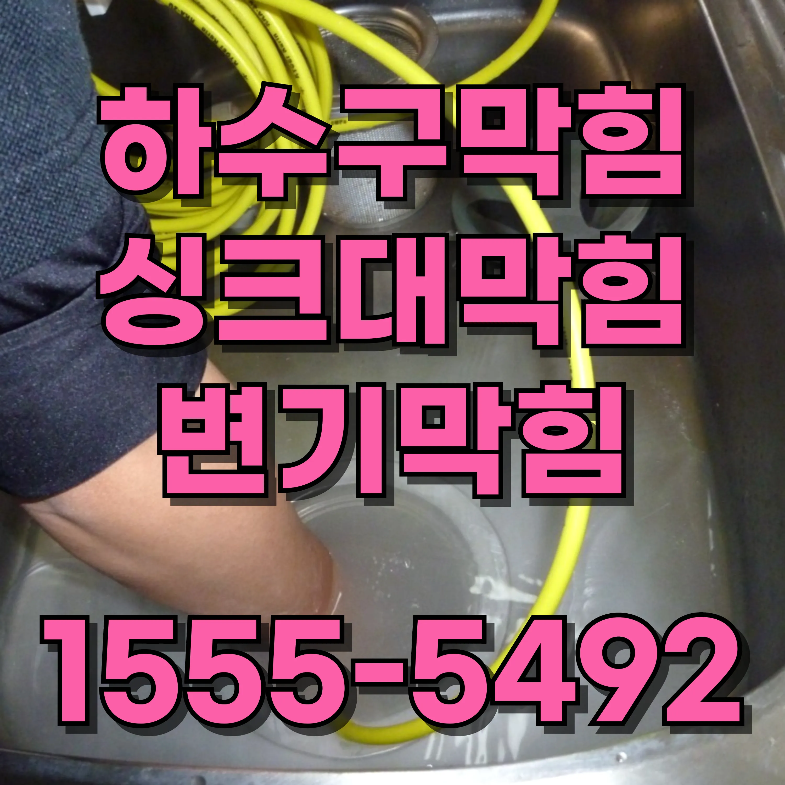
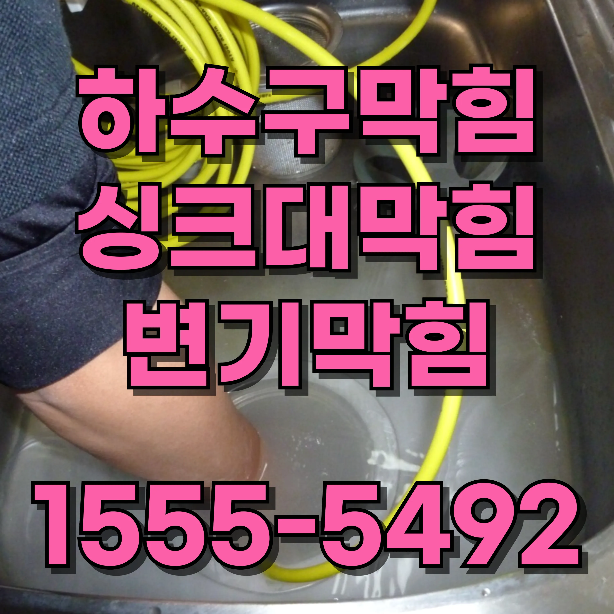

24시간 운영중
월 ~ 일


가양3동 하수구 배관 막힘 하수구 청소변기 내부의 부품들도 점검이 필요합니다. 변기의 부품들이 마모되거나 고장 나면 물이 내려가지 않거나 물이 흘러넘치는 문제를 일으킬 수 있습니다. 물탱크 안에 있는 플로트나 밸브, 배수 밸브 등이 손상되면 물이 제대로 내려가지 않거나 변기에서 물이 계속 흐를 수 있습니다. 이러한 문제는 부품을 교체하거나 조정하는 것으로 해결할 수 있습니다. 부품 교체는 일반적으로 어렵지 않으며, 새로운 부품을 구입하여 설치할 수 있습니다. 그러나 변기 내부의 부품을 점검하고 교체할 때는 정확한 모델을 사용해야 하며, 잘못된 부품을 사용할 경우 문제가 발생할 수 있으므로 주의해야 합니다. 변기 막힘 문제를 해결하는 데 있어 예방이 매우 중요합니다. 변기 사용 후 물이 고이거나 물이 제대로 내려가지 않는다면, 즉시 문제를 해결하기 위한 조치를 취해야 합니다. 또한, 배수구를 청소하고, 변기 부품들이 정상적으로 작동하는지 점검하는 것이 중요합니다. 변기 막힘을 예방하려면 변기 사용 습관을 개선하고, 이물질이 배수구에 쌓이지 않도록 주의하는 것이 필요합니다. 또한, 변기와 배수관을 정기적으로 점검하고 청소하여 막힘을 예방할 수 있습니다. 변기 막힘이 자주 발생하는 가정이라면 배수구를 깨끗하게 유지하고, 변기 부품들이 제대로 작동하는지 주기적으로 확인하는 것이 좋습니다. 결론적으로, 변기 막힘은 다양한 원인으로 발

가양3동 하수구 배관 막힘 하수구 청소인으로 발생할 수 있지만, 대부분의 경우 간단한 도구나 부품 교체를 통해 해결할 수 있습니다. 플런저나 배수관 스네이크를 사용하거나 화학 제품을 활용하여 문제를 해결할 수 있으며, 예방을 위해서는 올바른 사용 습관을 기르고 정기적인 점검과 청소를 하는 것이 중요합니다. 변기 막힘 문제를 적절히 해결하고 예방할 수 있다면, 쾌적하고 편리한 생활을 유지할 수 있습니다.


가양3동 하수구 배관 막힘 하수구 청소가양3동누수탐지
가양3동 하수구 배관 막힘 하수구 청소간단한 방법으로 해결되지 않는 하수구 막힘은 전문가의 도움이 필요합니다. 특히, 배수구에서 악취가 심하게 나거나 물이 전혀 내려가지 않는 경우, 전문가를 부르는 것이 좋습니다. 전문가들은 전문 장비와 기술을 통해 문제의 근본 원인을 찾아내고, 효과적으로 해결할 수 있습니다. 가양3동하수구막힘 가양3동 하수구 배관 막힘 하수구 청소
 

| 문제 | 예방법 | 추가 팁 |
|---|---|---|
| 가양3동변기막힘 | 생리대와 물티슈를 변기에 버리지 마세요. | 화장지를 필요한 만큼만 사용하여 막힘을 방지하세요. |
| 가양3동싱크대막힘 | 기름이나 기름기를 싱크대에 버리지 말고 종이타월로 닦아내세요. | 거름망을 사용하여 음식물 찌꺼기가 배수구로 들어가지 않게 하세요. |
| 가양3동하수구막힘 | 머리카락 필터를 설치하고 사용 후 정기적으로 청소하세요. | 배수구에 뜨거운 물을 한 달에 한 번 부어 비누 찌꺼기를 제거하세요. |